Research Vision
Establishing a unified mathematical and computational theory for optimal control of nonlinear multi-agent stochastic hybrid systems.
I direct the Multi-Modal Multi-Agent Control (M³AC) Lab, where the research program confronts the layered complexity of the most challenging autonomous systems.
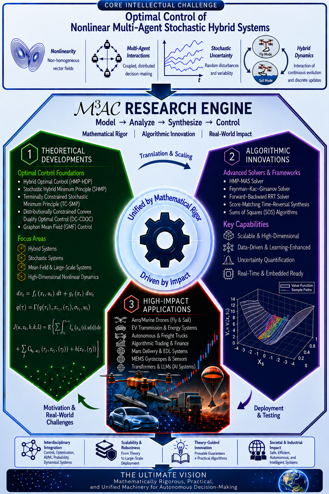
The core intellectual challenge is that real-world autonomous systems—from robotic agents to intelligent infrastructure—do not respect the clean boundaries of classical theory. They simultaneously involve continuous evolution, discrete updates, and dynamic probabilistic uncertainty. This challenge is further magnified in multi-agent systems, where existing results are largely confined to isolated, idealized corners of the problem space. My research program addresses this through a synergistic cycle: foundational theoretical questions are motivated by real-world implementation challenges; the resulting theories are translated into practical, scalable computational algorithms; and these algorithms are rigorously validated on experimental platforms.
Theory — Unifying Hybrid, Stochastic and Multi-Agent Frameworks
Bridging the theoretical gaps between single- and few-agent stochastic hybrid systems and the infinite-population and infinite-network-size limits.
Multi-Agent Systems Theory Across Scales:
Scaling coordinated autonomy from small groups to massive populations requires a fundamental shift in how inter-agent interactions and the connectivity graph are mathematically modeled. This comprehensive theory spans the full dual-direction spectrum of network complexity. On one axis, it scales from finite subpopulations (where individual interactions dominate) towards infinite subpopulations, culminating in Hybrid Mean-Field (HMF) systems theory. On the other axis, it scales from finite exact graphs to massive network limits representable by Graphon Mean-Field (GMF) systems. By advancing a paradigm shift toward "unnormalized" occupation measures, this framework seamlessly unifies all four operational regimes within a single measure-theoretic mathematical structure [J19].
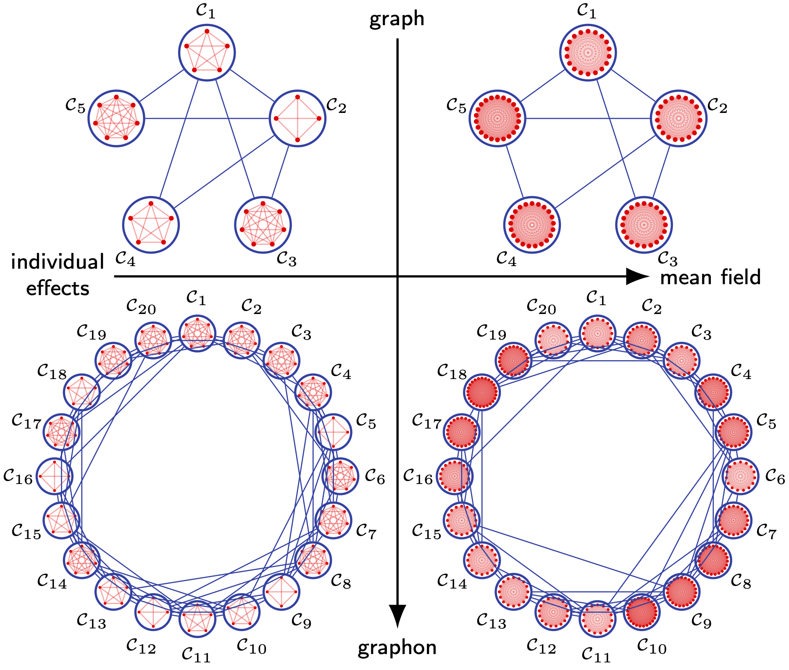
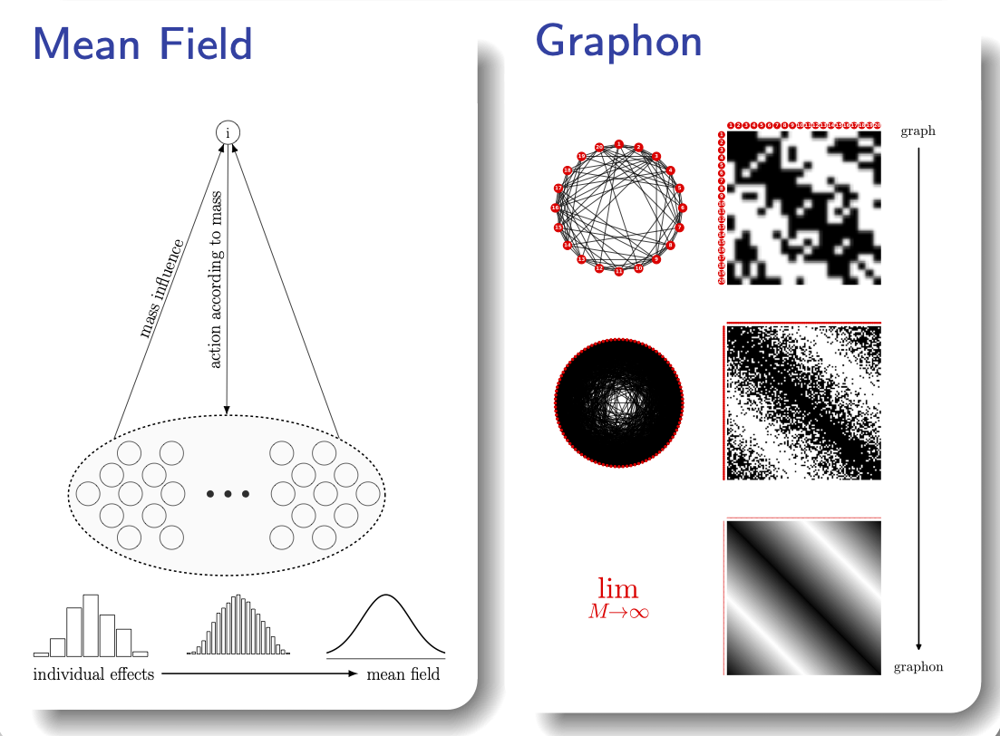
Unified framework for hybrid optimal control:
To rigorously handle systems that involve intertwined interactions of continuous evolutions and discrete updates, I have established unified versions for the Hybrid Minimum Principle (HMP) and Hybrid Dynamic Programming (HDP) within a general framework that simultaneously accommodates both autonomous (uncontrolled) and free (controlled) switchings, as well as non-trivial state jumps, and state-space dimension changes upon switching—resolving long-standing fragmentation in the optimal control of hybrid systems [J9][J10][J14].
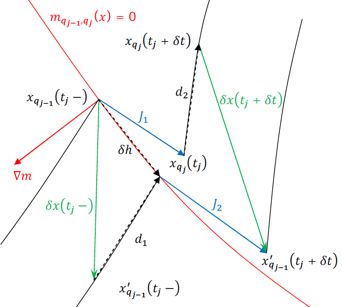
Strengthening optimality guarantees in stochastic hybrid systems:
I established a new version of the Stochastic Hybrid Minimum Principle (SHMP) that ensures almost-surely satisfaction of equality-type switching conditions which are required by switching manifolds in autonomous switchings. This represents a critical theoretical strengthening over prior results that could only guarantee satisfaction in expectation. This rigor is vital for physical systems where mode changes must occur with absolute certainty (e.g., a drone touching down on the water's surface before transitioning to sailing mode)[C10].
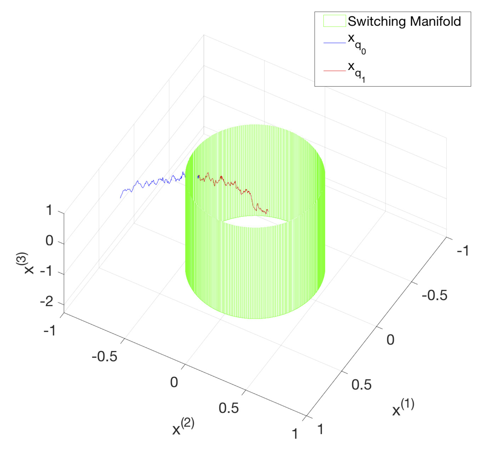
Terminal state delivery under probabilistic uncertainty:
In precision applications like landing of reusable rockets, systems must reach exact final configurations despite environmental noise. Because stochastic uncertainty makes exact point-wise constraining terminal states impossible, I established an alternative theoretical framework to rigorously enforce these requirements probabilistically. Specifically, the Terminally Constrained Stochastic Minimum Principle (TC-SMP) provides theoretical guarantees for satisfying perpetually renewing constraints on the conditional expectations of the terminal state. This breakthrough enables guaranteed terminal delivery for nonlinear stochastic systems, pushing well beyond covariance control and optimal transport frameworks [C13][J16].
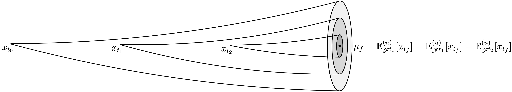
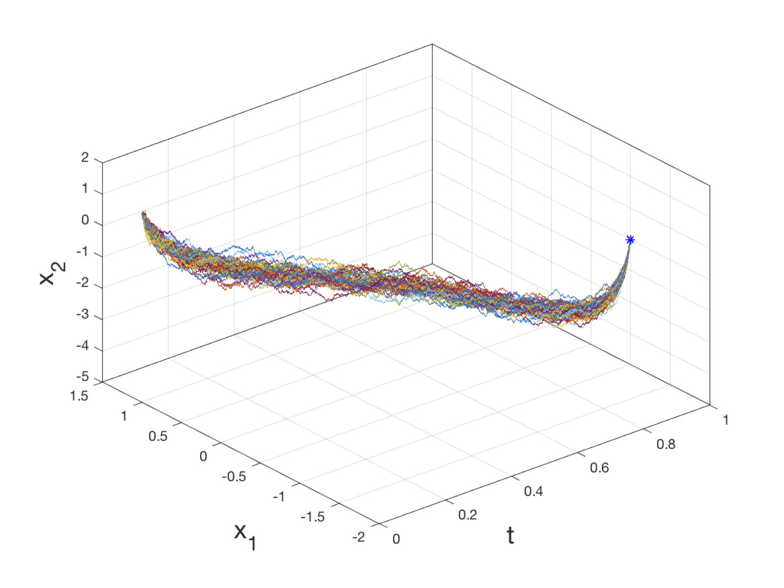
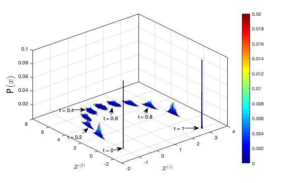
Distributional state assignment:
As a second approach to handling terminal state requirements under stochastic uncertainty, I established a framework to impose constraints directly on the probability distribution of the terminal state. Distributionally Constrained Convex Duality Optimal Control (DC-CDOC) enables this by deriving optimal inputs via a family of Hamilton-Jacobi (HJ) type equations. Built upon the duality relationship between the space of probability measures and continuous functions, this measure-theoretic methodology allows for the exact assignment of desired distributions, extending far beyond standard mean and covariance steering approaches for nonlinear stochastic systems [J12][C18].

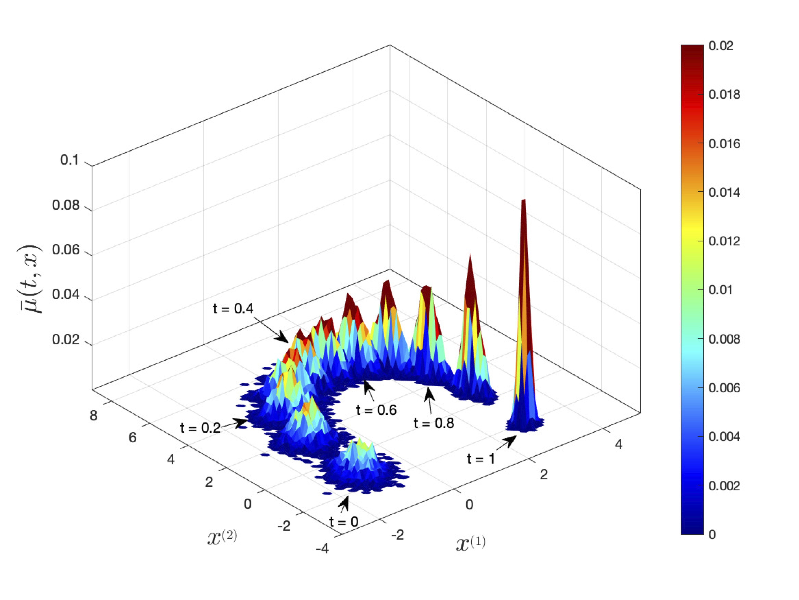
Tightening of Control Barrier Functions
In autonomous multi-agent systems, bounded disturbances and unmodeled dynamics can compromise the safety guarantees of nominal control algorithms. To ensure rigorous collision avoidance under uncertainty for nonlinear multi-agent systems, this research establishes a predictive, tube-based tightening framework for exponential Control Barrier Functions (eCBFs). By bounding state deviations within a Robust Positively Invariant (RPI) tube, the method utilizes Lipschitz-bounded support functions to dynamically tighten the safety constraints based on the worst-case geometric decrease along the tube. Furthermore, whenever knowledge about the agents' cooperative policy—such as leader-following consensus—is available, this framework can significantly reduce the conservatism of general-purpose tightening, preserving a larger operational envelope while rigorously guaranteeing safety [J21].
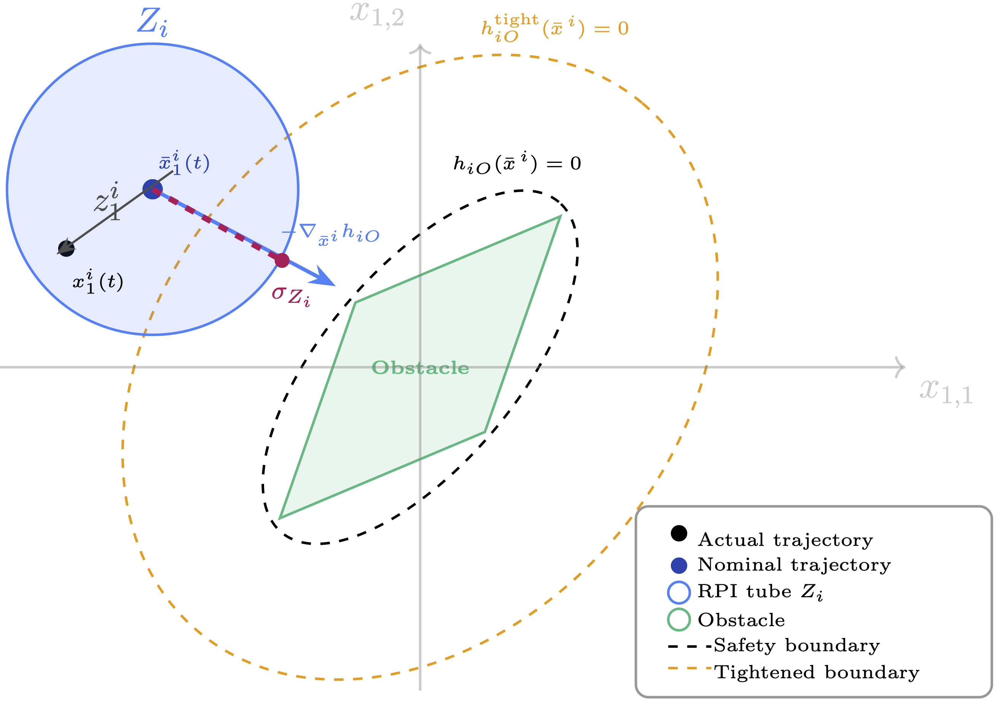
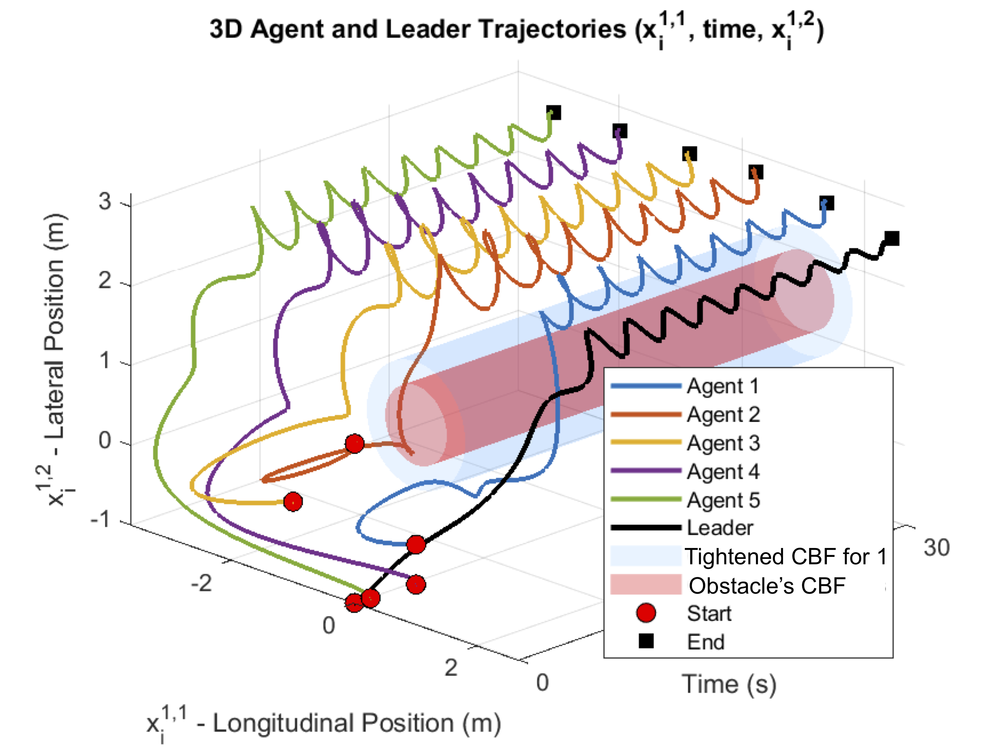
Computational Algorithms — Solving the Intractable
Translating theoretical advances into practical, high-performance computational tools.
HMP-Based Multiple Autonomous Switching (HMP-MAS) Algorithm:
Building on the analytical structure of the unified HMP, the explicitly-enhanced HMP-based Multiple Autonomous Switching (HMP-MAS) algorithm reliably solves a far broader class of hybrid problems. This computational tool incorporates closed-form expressions for key quantities, thus effectively handles computationally challenging boundary conditions stemming from autonomous switchings, non-identity state jumps, state-space dimension changes, and switching costs [J10].
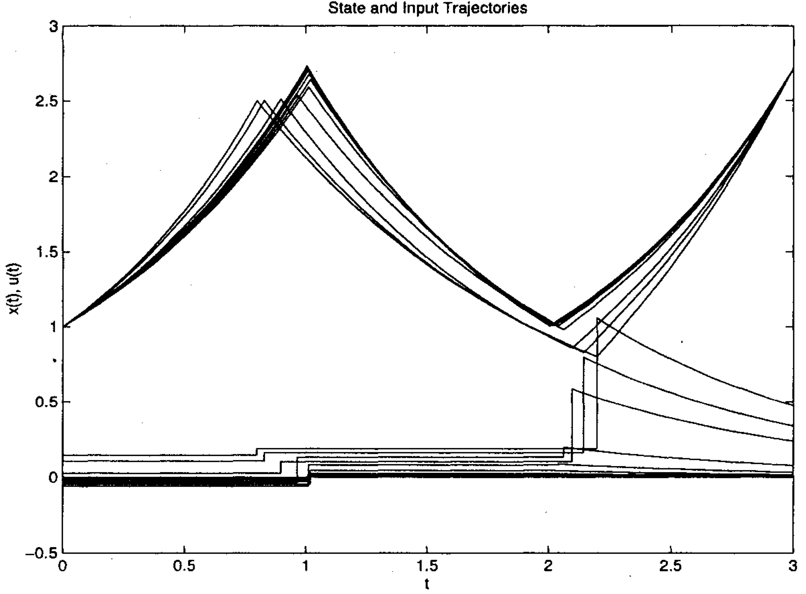
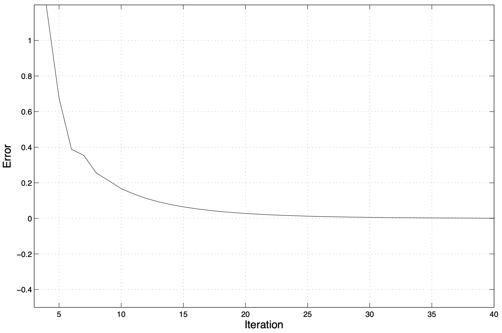
Feynman-Kac-Girsanov HJB Solver:
The Feynman-Kac representation theorem establishes that sample paths of a forward-backward stochastic process lie over the surface of the solution to some partial differential equations including, in particular, the nonlinear Hamilton-Jacobi-Bellman (HJB) equation. However, standard sample paths do not necessarily visit the specific state-space regions required for optimal control synthesis. This framework remedies this limitation through the targeted use of the Girsanov change of probability measures. By integrating this measure transformation with Rapidly-exploring Random Trees (RRTs), this methodology actively steers the sampling process toward critical regions, yielding highly accurate value function approximations [J18][J15].
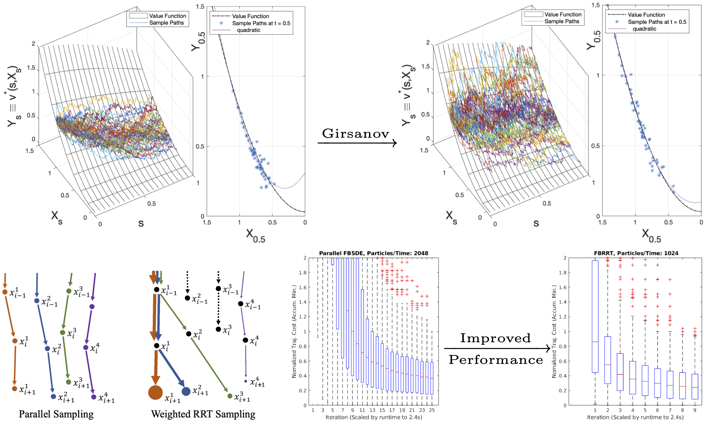
Time-Reversal Control Synthesis:
In diffusion-based generative AI, structured data is reconstructed from pure noise by simulating a time-reversed stochastic process. This reversal is governed by the so-called "score function". Inspired by it, this research establishes a Score-Matching Time-Reversal Control Synthesis framework that shifts focus from computationally prohibitive optimality to provable finite-time attractability. By extracting the score function of a properly defined time-reversed diffusion process, the method constructs a feedback law that almost surely steers nonlinear stochastic systems to the targeted state [C20].
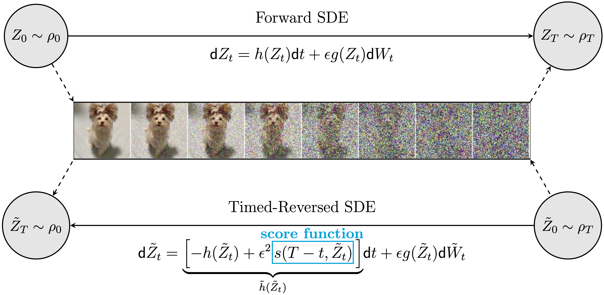
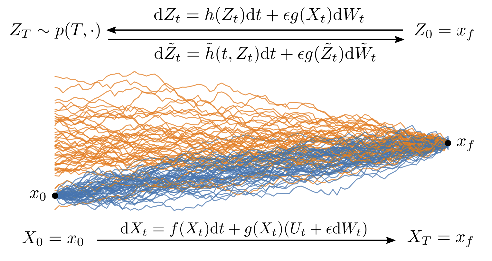
Polynomial Approximation of Value Function:
Approximating value functions via polynomials reduces the search from an uncountable space of continuous functions to a countable space of polynomial coefficients. Sums-of-squares (SOS) optimization further reduces this search to the mathematically tractable convex cone of SOS polynomials. Leveraging this hierarchical structure, this research establishes a framework that translates nonlinear estimation into computationally solvable semidefinite programs (SDPs), yielding direct construction of feedback policies for a broad class of nonlinear systems [C12].
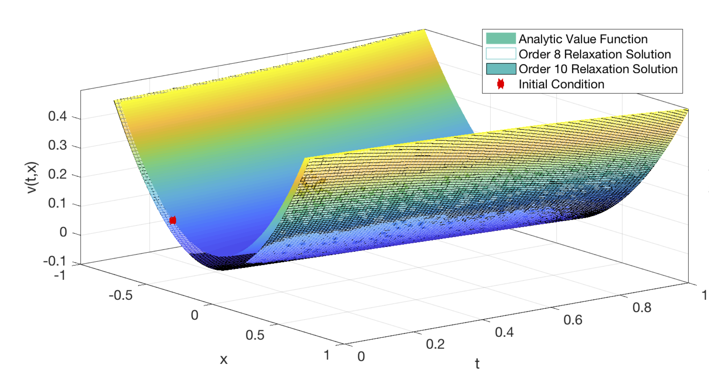
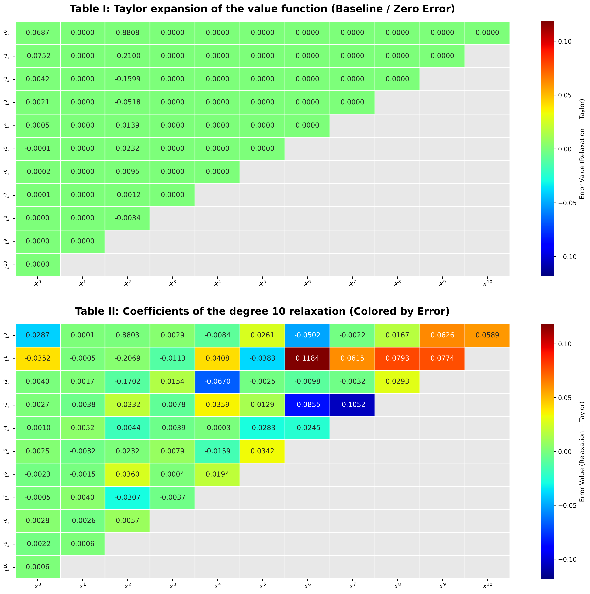
Implementation — Validating on Real-World Hardware
The ultimate test of any control theory is its performance in the physical world. I have consistently validated my theoretical developments on complex hybrid systems across robotics, automotive, and quantitative finance.
The AeroMarine Drone
Within the M³AC Lab, the AeroMarine serves as a multi-modal robotic testbed capable of both flying and sailing. Navigating across these distinct physical domains introduces a severe, mission-level trade-off: aerial flight offers rapid transit at a massive energetic cost, whereas surface sailing provides immense energy efficiency at the expense of speed. The core autonomous challenge is therefore empowering the robot to dynamically decide exactly when, where, and how to transition between domains to optimize its mission. By utilizing the Hybrid Minimum Principle (HMP) alongside the HMP-MAS algorithm, this research established a mathematical framework that simultaneously solves for the optimal continuous control and the exact, policy-dependent switching conditions. Rather than relying on heuristics, the framework couples full 6-DoF flight mechanics with internal motor dynamics, allowing the system to natively compute the absolute minimum energy-consuming trajectory that perfectly balances high-speed aerial maneuvers with sustainable aquatic operation [J17][J13].
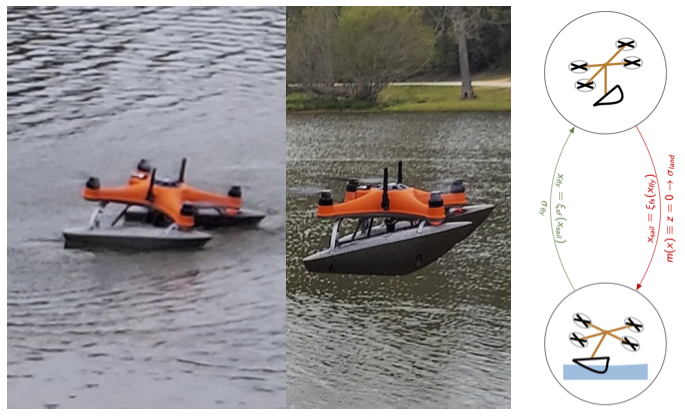
Minimum Time Policy
Minimum Energy Policy
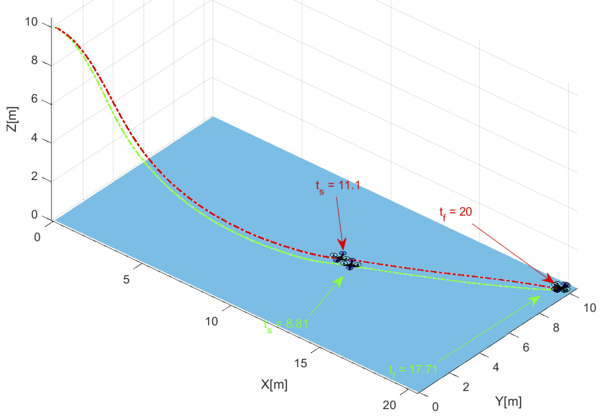
Automotive Systems: Dual Planetary Transmissions
As part of a $10M Automotive Partnership Canada (APC) initiative, this research investigated the energy consumption benefits of transmission-equipped electric vehicles. To this end, I contributed to the design, control, and experimentation of a novel, patented Dual Planetary Transmission (DPT) architecture capable of perpetually transmitting power during transitional phases without torque interruption [US Patent 9,702,438 B2]. I also established optimal control algorithms that precisely coordinate the motor-generator and transmission brakes to achieve seamless shifting, maximum acceleration, and minimum energy consumption. The underlying HMP-MAS algorithm and its solutions revealed distinct optimal strategies based on the driving objective: for eco-mode, an unanticipated, non-intuitive strategy emerges—later experimentally validated—where actively utilizing power regeneration during the gear transition itself minimizes the total energy usage. In sharp contrast, the time-optimal sport-mode solutions dictate delaying the shift and maintaining full motor torque throughout the entire transitional phase [J8][J6].
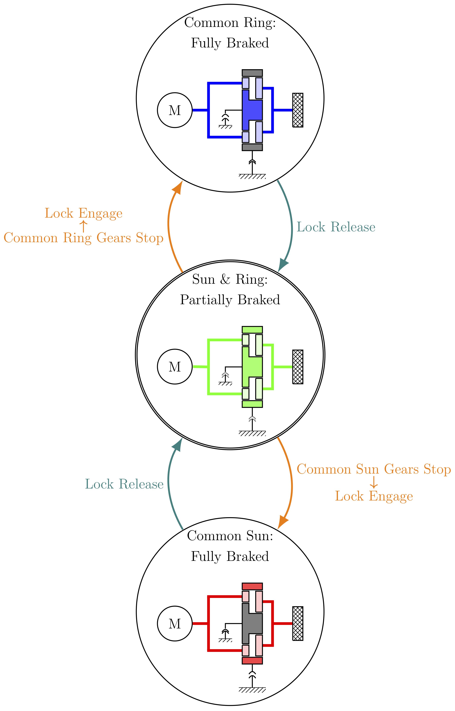
Algorithmic Trading & Optimal Execution
In highly volatile financial markets, the optimal execution of large trades is deeply intertwined with the collective behavior of High-Frequency Traders (HFTs). To capture this, this research establishes a Hybrid Mean-Field Game (HMFG) framework modeling the interplay between a single dominant "major agent" and a massive population of "minor agents." The framework integrates continuous state diffusion alongside discrete structural mode switching. For instance, the major agent can switch macro-level modes—like toggling an advertisement campaign—to alter the market environment, while minor agents simultaneously evaluate optimal stopping criteria to switch between active (buying/selling) and inactive (frozen) modes. By unifying these hybrid dynamics, this work yields computationally tractable best-response strategies that rigorously account for both the major agent’s outsized influence and the corresponding mean-field of the HFT population [C11][J11].
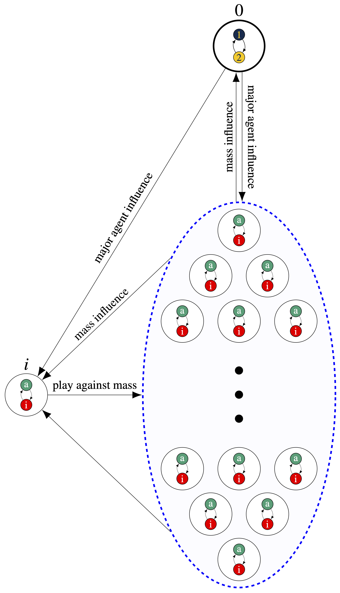
Multi-Modal Epidemiological Policy Making
Public health interventions are intrinsically hybrid, evolving abruptly between distinct regimes like baseline transmission, lockdowns, and vaccination campaigns. To capture this, this research establishes a hybrid optimal control framework for epidemiological systems featuring phase-dependent dynamics, changing state-space dimensions, and non-trivial state jumps. By invoking the Hybrid Minimum Principle (HMP), the framework simultaneously co-optimizes continuous intervention inputs—such as quarantine rates—and the exact timing of both autonomous and controlled policy switchings. This mathematically proves that dynamically coordinating Work-From-Home (WFH) and vaccination policies minimizes combined socioeconomic costs and epidemic burden significantly better than traditional single-phase interventions [Submitted to NAHS].
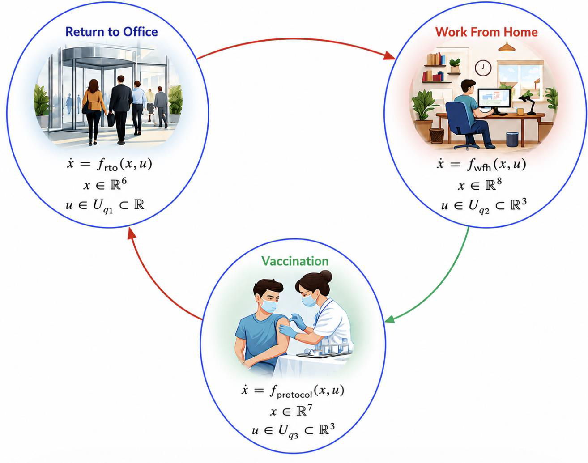
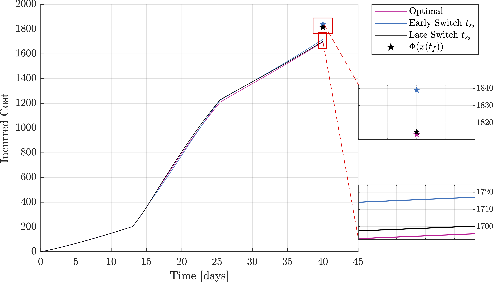
Sponsored Research Projects
Solving fundamental open problems in control theory with direct applications to space explorations and beyond.
State and Covariance Steering for Nonlinear and Hybrid Stochastic Systems
Funded by the National Science Foundation (NSF), this project proposes a transformational paradigm shift in how uncertainty is managed in autonomous systems. Rather than merely controlling systems "with uncertainty," this research establishes variational and measure-theoretic frameworks to directly "control the uncertainty" by shaping the entire state distribution (including mean, covariance, and higher-order moments). Crucially, this project extends the Terminally Constrained Stochastic Minimum Principle (TC-SMP) and Distributionally Constrained Convex Duality Optimal Control (DC-CDOC) into the domain of stochastic hybrid systems. This breakthrough enables the rigorous management of uncertainty across complex, mode-switching dynamics with both autonomous and controlled transitions.
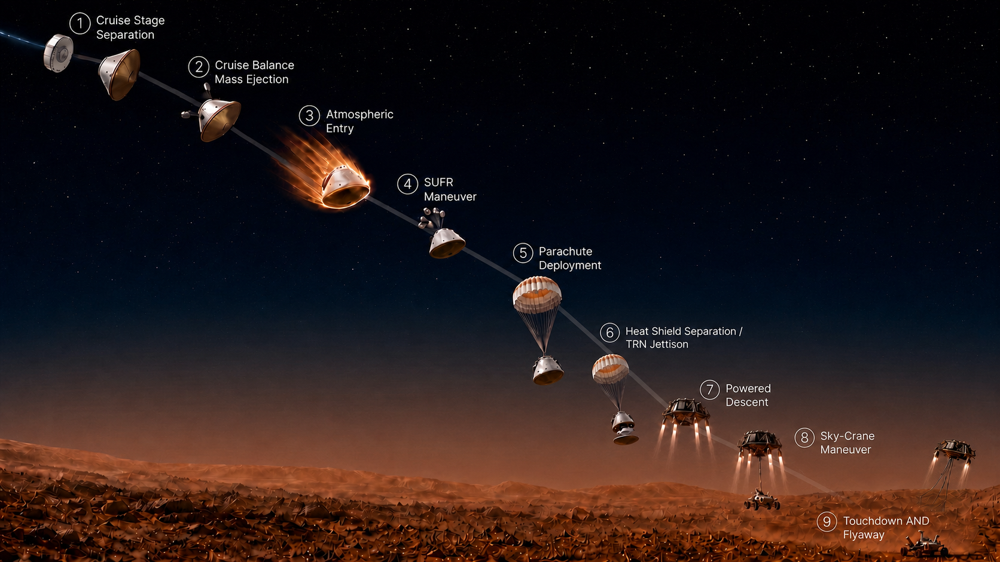
This advanced theory is currently being applied to the highly challenging problem of Mars rover surface delivery system. Through modeling the Entry, Descent, and Landing (EDL) sequence as a 9-phase hybrid optimal control problem—encompassing mass ejections, parachute deployment, and powered terminal descent—this framework precisely controls the landing ellipse under severe atmospheric uncertainty, guaranteeing pinpoint delivery of scientific payloads to the Martian surface.
For technical details and mathematical proofs, please see the publications page. The M³AC Lab welcomes collaboration with fellow researchers and engineering teams building real-world autonomous systems. Get in touch to discuss ongoing projects.